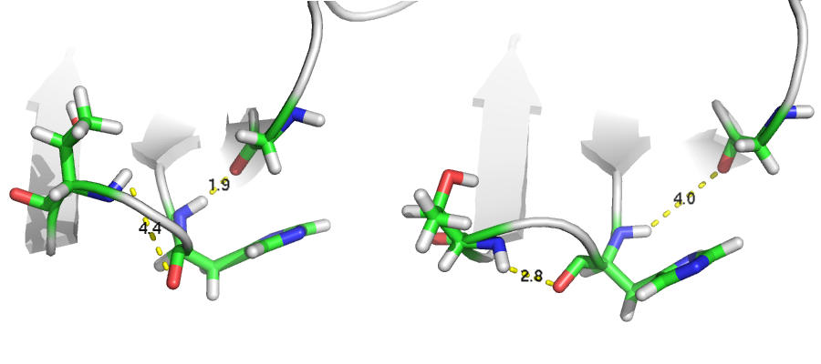
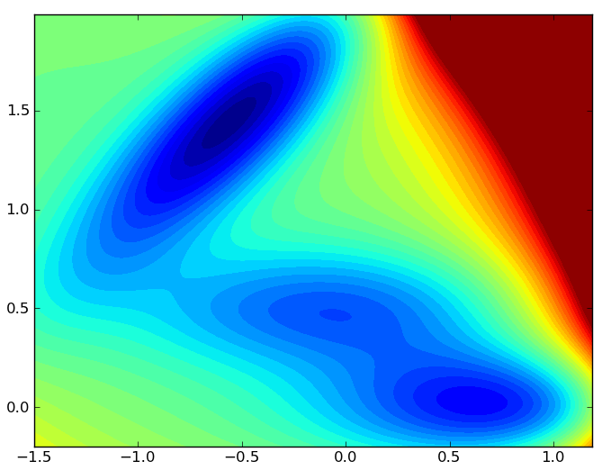

- Motivation
- Improving MSM construction with large-margin metric learning
- Current projects and future directions
- Adaptive sampling
- Statistical model selection
- Richer model classes
Robert McGibbon
August 27, 2013

 |
 |


What are the relevant conformational states?
What are the characteristic dynamics between them?
The MSM state decomposition, a clustering, is characterized by a bias-variance trade off.

$$ \max_{\mathbf{X},\rho} \left[ \alpha \rho - \frac{1}{N} \sum_i^N \lambda_\text{huber} \left(d^\mathbf{X}(\vec{a}_i,\vec{c}_i) - d^\mathbf{X}(\vec{a}_i, \vec{b}_i) - \rho \right) \right] $$
$$ d^{\mathbf{X}}(\vec{a}, \vec{b}) = (\vec{a} - \vec{b})^{T} \mathbf{X} (\vec{a} - \vec{b}) $$
$$ \max_{\mathbf{X},\rho} \left[ \alpha \rho - \frac{1}{N} \sum_i^N \lambda \left(d^\mathbf{X}(\vec{a}_i,\vec{c}_i) - d^\mathbf{X}(\vec{a}_i, \vec{b}_i) - \rho \right) \right] $$

2D Brownian dynamics, where vertical diffusion constant is 10x greater than the horizontal diffusion constant.

KDML distance metric gives converged behavior with fewer states.
 |
 |
|  |
 |
 |

Realizations from MSArM and (Gaussian) MSM
Thanks especially to Vijay, Christian S., TJ L. and Kyle B.